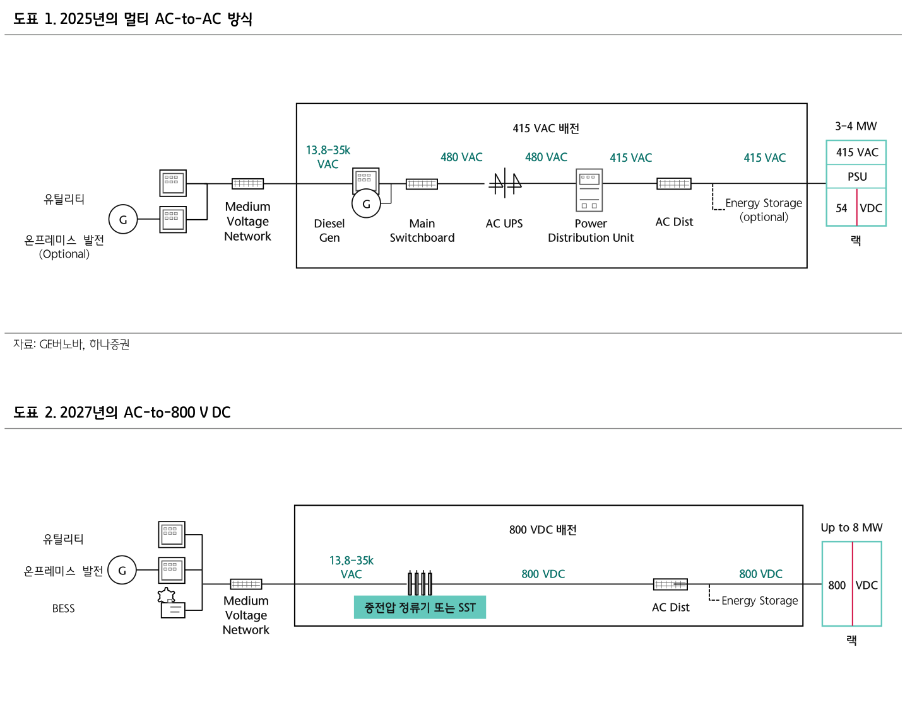

전력기기: 초고압 변압기는 2030년 인도분까지 차 있고, 수요는 배전·차단기·직류 배전으로 번지는 중
한눈에 보기
결론
- 북미 초고압 변압기 슬롯은 2028~2031년 인도분까지 차 있음 → 765kV급 리드타임 4~5년, 미국 변압기 PPI는 2020년 1월보다 91% 높음 (유진, 2026-03-03; NH, 2026-11-16; DS, 2026-11-10)
- 한국 특대형 변압기 수출은 2026년 1~10월 13.6억
로 전년 대비 +29.5%(계산), 10월 1.92억로 월간 최대 (LS, 2026-11-17)- 쟁점은 «언제 풀리나»: 한화는 물량 정점 2028년·가격 정점 2027년 상반기, NH·KB는 3~5년 이상 부족 지속으로 봄 (한화, 2026-08-03; NH, 2026-03-20; KB, 2026-08-31)
| 지표 | 값 | 비교·기준 | 출처 |
|---|---|---|---|
| 765kV급 변압기 리드타임 | 48~60개월 | 배전급 12~20개월 | (유진, 2026-03-03) |
| 미국 변압기 PPI | +91% | 2020.01 대비, 2026.07 | (DS, 2026-11-10) |
| 한국 특대형 수출(1~10월) | 13.6억$ | 전년 동기 +29.5%(계산) | (LS, 2026-11-17) |
| 미국 대형 변압기 수입 중 한국 | 18.0% | 2023년 10.5% | (DS, 2026-11-10) |
| 500kV+ 변압기 생산능력 | 2배 | 2030년 이후, 2025년 대비 | (NH, 2026-03-20) |
flowchart LR G["발전<br/>가스·원전·신재생"] --> GSU["승압 변압기 GSU"] GSU --> T["송전 765·500·345kV<br/>초고압 변압기·GIS·GCB"] T --> S["변전소 138kV~중압<br/>전력 변압기·차단기"] S --> D["배전 13.8~35kV<br/>배전변압기·배전반"] D --> DC["데이터센터 내부<br/>UPS·PDU → 800V DC"] DC --> R["랙 54V → 800V<br/>SST·SSCB·정류기"] B["병목<br/>전기강판·숙련공·건조공정"] -.-> T B -.-> S
구성: 유안타(2026-03-04) 전압 단계별 설비 누적, 하나(2026-06-22) AC→800V DC 구조, 유진(2026-03-03) 제조 병목 3요소를 엮음
- 원천 범위: 전력기기 리포트는 2026년 3월 이후에 몰려 있음 → 2025년 말~2026년 초 기준선은 얇음. 월별 수출은 LS 주간물 기준 2025년 10월부터 표로, 그 이전은 그래프 라벨로 보완
- 관련 노트: 00_에너지_index · 01_에너지_용어집 · 02_에너지_전력수요 · 04_에너지_전선과HVDC · 06_에너지_발전설비와가스 · 08_에너지_전력시장과요금 · 09_에너지_시장규모모델 · 10_에너지_하우스시각_변경이력 · 11_에너지_트래킹캘린더
① 기초: 전압 등급·품목 지도
요약
- 변압기는 전압이 높을수록 만들 수 있는 곳이 적고 리드타임이 김 → 765kV급은 전 세계 10곳 미만
- 변전소에는 변압기와 함께 차단기·GIS가 같이 들어감 → 초고압 사이클은 «변압기+개폐장치» 패키지
- 765kV는 345kV보다 한 회선으로 5~6배 많은 전력을 보냄 → GW급 부하가 전압 상향을 끌어냄
변압기 전압 등급별 분류
| 구분 | 전압 | 정격 용량 | 국내 제조사 |
|---|---|---|---|
| 송전 UHV | 1,100kV | 100,000kVA 이상 | HD현대일렉·효성 |
| 송전 EHV | 345~765kV | 100,000kVA 이상 | HD현대일렉·효성·LS일렉·일진 |
| 송전 HV | 115~230kV | 10,000~100,000kVA | HD현대일렉·효성·일진·LS일렉 |
| 송전 MV | 34.5~115kV | 10,000~100,000kVA | 위 4사 + 산일전기 |
| 배전 LV | 2.5~35kV | 1,000~10,000kVA | 산일전기·제룡전기 |
| 배전 변압기 | 2.5~35kV | 5~5,000kVA | 산일전기·제룡전기 |
자료: 유안타(2026-03-04) p.9 변압기 용량별 분류표. 전압 경계는 원문 표기 그대로
변전소 개폐장치: 차단기·GIS·AIS
| 설비 | 역할 | 특징 |
|---|---|---|
| 차단기(CB·GCB) | 고장 전류 차단 | 변압기와 함께 변전소 안정성 결정 |
| 단로기·접지개폐기 | 설비 안전 분리 | 차단기와 한 세트 |
| AIS(공기절연) | 공기 중 절연거리 확보 | 부지 넓게 필요 |
| GIS(가스절연) | 차단기·모선을 금속 외함에 집약 | 도심·공간 제약 변전소에 적합 |
| CT·VT·보호계전기 | 전압·전류 계측·감시 | 계통 보호 |
자료: 핀릿(2026-09-21) p.40 내외 개폐장치 설명 재구성
- GIS는 시험능력·운전실적이 진입장벽
- 효성중공업은 72.5~800kV GIS 제품군·800kV 공급실적 보유 (핀릿, 2026-09-21)
- 북미 800kV급 차단기는 765kV 변압기보다 경쟁 업체가 적은 시장 (DS, 2026-11-10)
- 중·저압 배전기기는 Schneider·Eaton·ABB와 LS일렉이 비교군 → 현지 인증·서비스망·납기가 경쟁력 (핀릿, 2026-09-21)
765kV가 다시 뜨는 이유: 회선 수
| 거리(마일) | 345kV | 500kV | 765kV |
|---|---|---|---|
| 50 | 1,170 | 2,730 | 6,630 |
| 100 | 780 | 1,820 | 4,420 |
| 200 | 510 | 1,180 | 2,870 |
| 300 | 390 | 910 | 2,210 |
단위: 단일 회선 부하 가능량(MW). 자료: AEP, 유안타(2026-03-04) p.9
- 1GW를 장거리로 보내려면 345kV는 여러 회선, 765kV는 한 회선으로 가능 → 인허가·통행권 리스크 감소 (유안타, 2026-03-04)
- 텍사스 ERCOT STEP 계획의 신규 765kV는 2,468마일(345kV 649마일) → 상단 전압 자체를 올리는 설계 전환 (유안타, 2026-03-04)
변압기 제조 병목 3요소
| 병목 | 원인 | 해결 난이도 |
|---|---|---|
| 전기강판(GOES) | EV 모터 강판과 설비 경합 | 높음, 2027년까지 부족 |
| 숙련공(권선) | 수작업, 양성에 5년 | 높음, 단기 해결 불가 |
| 건조 공정 | 절연 확보에 물리적 시간 필요 | 중간, 오븐 증설해도 시간 불변 |
자료: 유진(2026-03-03) p.27 도표 30
- 인력 병목은 업계 공통 발언: HD현대일렉 대표 «공장을 지어도 인력이 없으면 물량 확대 어려움», Siemens Energy도 숙련 인력 수급 난항 언급 (NH, 2026-03-20)
- 경쟁사 대부분이 신축보다 기존 시설 개조(브라운필드)로 증설 → 증설 속도가 느린 구조적 이유 (NH, 2026-03-20)
② 전방 수요: 미국 송배전망과 AI 데이터센터
요약
- 미국 전력용 변압기 수요는 2019년 이후 +119%, 승압 변압기(GSU)는 +274% → 공급의 약 80%를 수입에 의존
- 1GW AI 캠퍼스 = 상단은 전압 단계별 설비 누적, 하단은 50MW 블록 반복 발주, 내부는 정류·DC 설비 추가
- 수요 상세는 02_에너지_전력수요, GW → 기자재 환산은 09_에너지_시장규모모델
미국 변압기 수급 구조
| 항목 | 값 | 기준 | 출처 |
|---|---|---|---|
| 전력용 변압기 수요 증가 | +119% | 2019년 대비 | (DS, 2026-11-10) |
| GSU 수요 증가 | +274% | 2019년 대비 | (DS, 2026-11-10) |
| 수입 의존도 | 약 80% | 2025년, 전력용 | (DS, 2026-11-10) |
| 공급 부족률 | 30% | 2025년 | (DS, 2026-11-10) |
| 대형 변압기 수입액 | 40.2억$ | 2025년(2019년 9.5억$) | (DS, 2026-11-10) |
| 대형 변압기 수입액 LTM | 44.4억$ | 2025.10~2026.09 | (DS, 2026-11-10) |
대형 변압기 = HS 8504.23(1만kVA 초과 유입식), USITC 통관 기준
전방수요(GW) → 초대형 변압기 수입 대수
| 연도 | 전방수요 | 1GW당 대수 | 초대형 변압기 수입 |
|---|---|---|---|
| 2023~2025 | ⚠ 원문 없음 | 4.7~5.1 | ⚠ 원문 없음 |
| 2026E | 608GW | 4.7 | 약 2,860대 |
| LTM 실적 | — | — | 2,685대(추정의 94%) |
| 2027E | 913GW | 4.7 | 약 4,300대 |
자료: DS(2026-11-10) p.54. 2027년 대수는 2025년의 약 2배
1GW AI 캠퍼스가 만드는 설비 물량
| 계층 | 가정 | 1GW당 물량 |
|---|---|---|
| 총 인입 전력 | PUE 1.3 | 약 1.3GW |
| 설비 기준 용량 | 역률 0.95 | 약 1,368MVA |
| 전력 블록 | 50MW 블록 | 약 20개 |
| 중압 변압기 | 블록당 3대(N+1) | 약 60기(40~80) |
| 배전반 | 블록당 12~20면 | 240~400면 |
| 정류 모듈(800V DC) | 블록당 10MW×5 | 약 100식 |
자료: 유안타(2026-03-04) p.20 «AI 1GW 수요 모델»
- 송전은 «용량», 배전은 «반복»
- 765→345→138kV→중압으로 내려갈 때마다 변압기·차단기가 한 번씩 더 붙음 (유안타, 2026-03-04)
- 40~60MW 블록이 승인·공사·GPU 투자 일정이 맞는 균형점 → 같은 사양 발주가 쌓임
- 글로벌 전력망 투자 3,900억
(2024) → 2035년 최대 8,000억전망 인용 (BNK, 2026-03-03) - 실물 발주는 2027~2029년에 몰리고, 2028년부터 계통연계 클러스터 심사로 처리량이 늘 가능성 (KB, 2026-08-31)
- 한국 내수(AIDC 18.4GW 목표·Grid)는 북미를 대체하는 이익축보다 보조축이라는 시각 (유안타, 2026-09-10)
③ 기술 심화: 배전·800V DC·SST·친환경 개폐장치
요약
- 랙 전력이 150kW → 1MW급으로 커지면서 54V 배전이 한계 → 800V DC와 SST(반도체 변압기)가 대안
- DC 전환은 상단 송전 설비를 줄이지 않음 → 내부 배전에 전력전자 계층이 하나 더 붙는 구조
- 본격 도입 시점이 2027년 → 2028년으로 밀릴 가능성 제기 → 과도기엔 AC 장비 + 사이드 파워랙 병행
AC 배전과 800V DC 배전 비교

출처: GE버노바, 하나(2026-06-22) p.2 도표 1·2
| 항목 | AC 배전(2025년) | 800V DC(2027년~) |
|---|---|---|
| 인입 | 13.8~35kV AC | 13.8~35kV AC |
| 중간 장비 | 메인 배전반·UPS·PDU | 중전압 정류기 또는 SST |
| 배전 전압 | 480·415V AC | 800V DC |
| 랙 입력 | 54V DC, 랙당 3~4MW | 800V DC, 랙당 최대 8MW |
자료: 하나(2026-06-22) 도표 1·2 판독. «랙당 MW»는 도표 표기 그대로
랙 전력 밀도 변화
| 세대 | 랙당 전력 | 출처 |
|---|---|---|
| 범용 서버 | 10~30kW | (유안타, 2026-03-04) |
| AI GPU 랙 | 80~150kW | (유안타, 2026-03-04) |
| 블랙웰 울트라 | ~150kW | (하나, 2026-06-22) |
| 루빈 울트라 | ~1,000kW | (하나, 2026-06-22) |
- 전력 손실은 전류의 제곱에 비례 → 같은 전력이면 전압을 올려 전류를 낮추는 게 유리 (하나, 2026-06-22)
- DC 전환은 «감소»가 아니라 «재편»: UPS·PDU 형태가 바뀌고 정류기·DC 차단기·DC-DC 변환기가 추가됨 (유안타, 2026-03-04)
SST(반도체 변압기) vs 기존 변압기
| 항목 | 기존 변압기 | SST |
|---|---|---|
| 원리 | 구리 코일+철심 전자기 유도 | SiC·GaN 전력반도체 스위칭 |
| 효율 | 95~98% | 99% 이상 |
| 크기·무게 | 크고 무거움 | 기존의 30~50% |
| 절연·냉각 | 절연유 | 공랭·고체 절연 |
| 전력 제어 | 단순 전압 변환 | 양방향 흐름 제어 |
자료: BNK(2026-03-03) p.4 표 3
SSCB(반도체 차단기) vs 기계식 차단기
| 항목 | 기계식 | SSCB |
|---|---|---|
| 차단 속도 | 30~50ms | 0.001ms 이하 |
| 효율 | 접점 저항 발생 | 99.4% 이상 |
| 내구성 | 기계적 마모 | 접점 없어 반영구 |
| 핵심 소재 | 구리 접점·스프링 | SiC·GaN |
자료: BNK(2026-03-03) p.5 표 4
- DC는 전류가 0이 되는 지점이 없어 차단 시 아크가 강함 → SST 앞뒤에 SSCB가 필수 (BNK, 2026-03-03)
SST·800V DC 상용화 일정
| 업체 | 제품 | 일정 | 출처 |
|---|---|---|---|
| Enphase | IQ SST 1.25MW, 효율 98.5% | 2027 시범 → 2028 양산 | (SK, 2026-05-28) |
| Eaton | 중전압 SST(Resilient 인수) | 2026 초도 → 2027 양산 | (SK, 2026-05-28) |
| SolarEdge | 2~5MW SST(인피니언 공동) | 양산 일정 미정 | (SK, 2026-05-28) |
| Vertiv | 800V DC 포트폴리오 | 2026 하반기 출시 | (SK, 2026-05-28) |
| GE Vernova | GW급 800V DC 시스템 | 엔비디아와 개발 중 | (SK, 2026-05-28) |
| 효성중공업 | 22.9kV SST | 개발 완료·미국 사업화 | (SK, 2026-05-28) |
- 800V DC 수주는 2026년 하반기 시작, 출하는 Kyber 랙 도입 시점인 2027년 말~2028년 초 예상 (하나, 2026-06-22)
- 공급망 병목으로 본격 도입이 2027년 → 2028년으로 약 1년 밀릴 가능성 → 과도기엔 사이드 파워랙·BBU·CBU 수요 증가 (하나, 2026-06-22)
- 데이터센터마다 목적이 달라 단일 표준으로 수렴하지 않을 수 있음(Vertiv 애널리스트데이 메시지 인용) (SK, 2026-05-28)
친환경 개폐장치: EU SF₆ 규제 일정
| 적용 연도 | 대상 신규 개폐장치 |
|---|---|
| 2026 | 24kV 이하 |
| 2028 | 52kV 초과~145kV 이하·50kA 이하 |
| 2030 | 24kV 초과~52kV 이하 |
| 2032 | 145kV 초과 또는 50kA 초과 |
자료: 핀릿(2026-09-21). 기술·조달 예외 조항 있음 → 일괄 판매금지는 아님
- SF₆-Free GIS·친환경 절연이 새 경쟁축 → 시험능력·레퍼런스 쌓인 기존 공급사 우위가 커짐 (핀릿, 2026-09-21)
④ 캐파·증설: 2026~2029년 완공 몰림
요약
- 국내 3사 증설은 2025년 말~2028년에 순차 완공 → 울산(2026.11)·멤피스 2차(2026년 말)·앨라배마 2공장(2027.04)·창원 HVDC(2027.07)
- 해외 경쟁사(히타치·지멘스·GE)도 미국·유럽 신공장을 2027~2029년 가동 목표로 추진
- 증설 무게가 초고압 → 배전반·배전변압기·차단기로 이동 중
업계 증설 로드맵 (2025~2029)
| 구분 | 업체·거점 | 2025 | 2026 | 2027 | 2028 | 2029 | |||||||||||||||
|---|---|---|---|---|---|---|---|---|---|---|---|---|---|---|---|---|---|---|---|---|---|
| 1Q | 2Q | 3Q | 4Q | 1Q | 2Q | 3Q | 지금 4Q | 1Q | 2Q | 3Q | 4Q | 1Q | 2Q | 3Q | 4Q | 1Q | 2Q | 3Q | 4Q | ||
| 초고압 변압기·한국 | HD현대일렉 울산 신공장 | 건설 2,118억원 | ◆ 가동(11월) | 연 40~50대 추가 · 27년 말 가동률 100% 목표 | |||||||||||||||||
| 효성 창원 HVDC 변압기 | 신공장 건설 2,540억원 | ◆ 준공(27.07) | |||||||||||||||||||
| LS일렉 부산 2생산동 | ◆ 준공(25.11~12) | 연매출 Capa 7,000억원 Full 가동 | |||||||||||||||||||
| LS파워솔루션 울산 | 배전변압기 증설 | ◆ 배전 3,500억 | 초고압 증설 | ◆ 초고압 3,000억 | |||||||||||||||||
| 산일전기 안산 154kV | ◆ 부지 양수 | 설비 구축 | 양산 전망(2028) | ||||||||||||||||||
| 초고압 변압기·미국 | HD현대일렉 앨라배마 2공장 | 그린필드 건설 · 765kV 시험설비 | ◆ 준공(27.04) | ||||||||||||||||||
| 효성 멤피스 2차 | Capa 2배 → 연 4억$ | ◆ 실적 반영 | |||||||||||||||||||
| 효성 멤피스 3차 | 1.57억$ 추가 증설 | ◆ 연 7억$(28.06) | |||||||||||||||||||
| Virginia Transformer 앨라배마 | 그린필드 약 3억$ | ◆ 준공(28.01) | |||||||||||||||||||
| 해외 경쟁사 변압기 | Hitachi South Boston | ◆ 착공 | 신공장 4.57억$ | 가동 목표 2028 | |||||||||||||||||
| Hitachi Ludvika(스웨덴) | ◆ 착공 | AC·DC 변압기 Capa +40% | ◆ 준공(가을) | ||||||||||||||||||
| Hitachi Gallman | ◆ 착공(말) | 5.28억$ · Capa 2배+ | ◆ 생산 | ||||||||||||||||||
| Siemens Charlotte | 건설·채용 | ◆ 생산 개시 | |||||||||||||||||||
| Siemens Nuremberg(독일) | ◆ 착공 | 대형 변압기 Capa +50% | ◆ 신규 구역 | ||||||||||||||||||
| Prolec GE Goldsboro | ◆ 착공 | 연 220 → 420대 | ◆ 완료 추산 | ||||||||||||||||||
| GE Vernova 하이퐁(베트남) | ◆ 발표 | HVDC용 변압기 2억$ | 완전 가동 2028 | ||||||||||||||||||
| 배전·차단기 | 효성 창원 수출용 차단기 | 420~800kV Capa 2배 | ◆ 준공(26.10) | ||||||||||||||||||
| 효성·Quanta 캐넌스버그 JV | ◆ JV 설립 | 준비 | ◆ GCB 현지 생산 | ||||||||||||||||||
| HD현대일렉 청주 배전 2단계 | 1,980억원 · 배전변압기 Capa 2,500억원 → 29.06 투자 종료 | ||||||||||||||||||||
| LS일렉 유타 | ◆ 착공 | 배전반·차단기 약 6배 | ◆ 1차 완공(2H27) | 2030년 말 Capa 7,000억원+ | |||||||||||||||||
| Eaton Jonesville | ◆ 발표 | 3상 배전변압기 3.4억$ | ◆ 생산 개시 | ||||||||||||||||||
| Schneider Mt. Juliet | ◆ 1기 개장 | 2기 건설(중압 스위치기어) | |||||||||||||||||||
| ABB·미쓰비시 미국 | ◆ 개장(10월) | ||||||||||||||||||||
진행·확정 ◆ 가동·핵심 마일스톤 계획 구간 | 굵은 세로선 = 연도 경계
자료: DS(2026-11-10) p.56~57 표24~26, LS(2026-06-30) p.34~36·p.128~131, LS(2026-10-22), 다올(2026-10-28), 유안타(2026-11-02). 바 위치는 발표·착공·준공 시점을 분기로 옮긴 근사. «지금» = 2026년 4분기
국내 변압기 생산능력 (연간 매출 기준)
| 업체·거점 | 증설 전 | 증설 후 | 완공 | 출처 |
|---|---|---|---|---|
| LS일렉 부산 | 2,000억원 | 7,000억원 | 2025.12 | (LS, 2026-06-30) |
| LS파워솔루션 초고압 | 1,000억원 | 3,000억원 | 2028 하반기 | (LS, 2026-10-22) |
| LS파워솔루션 배전 | 1,000억원 | 3,500억원 | 2027 하반기 | (LS, 2026-10-22) |
| 효성 창원 AC | 7,000억원 | +500~1,000억원 | 2025.06 | (LS, 2026-06-30) |
| 효성 멤피스 | 2억$ | 4억$ → 7억$ | 2026말·2028.06 | (유안타, 2026-11-02) |
| 효성 창원 HVDC | 신규 | 6,000억원(DC) | 2027.07 | (LS, 2026-06-30) |
효성 난통(중국) 2억$는 증설 규모 미공개 ⚠. 원화 환산은 원문 환율 1,400원 가정
| HD현대일렉 거점 | 증설 내용 | 매출 증대효과 | 시점 | 출처 |
|---|---|---|---|---|
| 울산 1차 | 초고압 변압기 | 1,400억원 | 2024.11 | (LS, 2026-06-30) |
| 울산 2차 | 연 40~50대 추가 | 2,000억원 | 2026.11 가동 | (다올, 2026-10-28) |
| 앨라배마 1차 | 브라운필드 | 800억원 | 2024.11 | (LS, 2026-06-30) |
| 앨라배마 2차 | 그린필드·765kV | 2,000억원 | 2027.04 | (DS, 2026-11-10) |
| 청주 2단계 | 배전변압기 | 2,500억원 | 2029.06 | (LS, 2026-10-28) |
- 국내 3사 증설 합계(투자 → 매출 증대): HD 6,743억원 → 7,700~10,200억원, LS 5,296억원 → 14,000억원, 효성 6,360억원 → 15,500~17,400억원 (LS, 2026-06-30)
- 증설 강도는 HD가 3사 중 가장 약하다는 평가 → 청주 배전변압기 신규 증설로 일부 만회 (LS, 2026-10-28)
배전·차단기 생산능력
| 업체·거점 | 품목 | 규모 | 시점 | 출처 |
|---|---|---|---|---|
| 효성 창원 | GIS 수출 전용 | 연매출 3,400억원 | 2026.09 | (LS, 2026-06-30) |
| 효성 창원 | 420~800kV 차단기 | Capa 약 2배 | 2026.10 | (DS, 2026-11-10) |
| 효성·Quanta JV | 72.5~800kV GCB | 미국 현지 생산 | 2026.10 계획 | (DS, 2026-11-10) |
| LS일렉 유타 | 배전반·차단기 | 500억 → 7,000억원+ | 2030년 말 | (LS, 2026-06-30) |
| LS일렉 청주 | 국내 배전반 | 1.3조원(협력사 포함) | 증설 검토 | (LS, 2026-06-30) |
| HD현대일렉 청주 | 중저압 차단기 | +1,500억원(최대 4,000) | 2025.10 | (LS, 2026-06-30) |
글로벌 전력기기 업체 투자 계획
| 업체 | 총 투자 | 기간 | 전력기기 핵심 |
|---|---|---|---|
| Hitachi Energy | 90억$+ | ~2027 이후 | 변압기 15억$ |
| Siemens Energy | 약 70억$ | ~2028 | 변압기·스위치기어 23억$ |
| GE Vernova | 약 110억$ | 2025~2028 | Prolec GE 10억$ |
| Eaton | 15억$+ | 2023년 이후 | 3상 변압기 공장 3.4억$ |
| Schneider | 7억$ | 미국, ~2027 | 중전압 스위치기어 |
| WEG | 약 2.4억$ | 2023 발표 | 미주·남미 변압기 |
자료: 각사, LS(2026-06-30) p.50 표25. GE Vernova는 CAPEX+R&D 합산
회사별 수주잔고·지역 비중 (3Q26)
| 업체 | 수주잔고 | 북미 비중(잔고) | 3Q26 신규수주 | 북미 비중(수주) |
|---|---|---|---|---|
| HD현대일렉 | 88.4억$ | 68.1% | 9.8억$ | ⚠ 원문 없음 |
| 효성 중공업 | 18.9조원 | 60% | 3.23조원 | 약 68% |
| LS일렉 본사 | 7.04조원 | ⚠ 원문 없음 | 1.59조원 | 66.4% |
자료: 다올(2026-10-28)·LS(2026-10-28) HD, 유안타(2026-11-02) 효성(북미 수주 비중은 그래프 판독, 근사), LS(2026-10-22) LS일렉. 단위 혼재(달러·원) → 회사 공시 기준 그대로
| 업체 | 특징 지표 | 값 | 출처 |
|---|---|---|---|
| HD현대일렉 | 북미 매출 비중 2Q→3Q26 | 47.5% → 38.0% | (LS, 2026-10-28) |
| HD현대일렉 | 잔고 YoY | +26.6% | (IBK, 2026-10-28) |
| 효성 중공업 | 765kV 변압기 잔고 | 약 1.9조원 | (유안타, 2026-11-02) |
| 효성 중공업 | 잔고 YoY | +71% | (유안타, 2026-11-02) |
| LS일렉 본사 | 잔고 YoY | +73.1% | (LS, 2026-10-22) |
| LS일렉 | 3Q26 미국 배전반 수주 | 6,294억원(+734%) | (LS, 2026-10-22) |
- HD 북미 매출 비중 급락은 수요 문제가 아닌 납품 일정 탓 → 북미 판가·수익성은 1Q~3Q26 계속 상승 (다올, 2026-10-28)
- LS일렉 미국 수주는 배전반 중심 → 하이퍼스케일러 데이터센터 배전 솔루션 대형 수주가 2개 분기 연속 (LS, 2026-10-22)
- 효성은 하이퍼스케일러향 765kV·345kV 변압기 직수주, 미국 765kV 송전망 STATCOM 약 3,000억원 확보 (유안타, 2026-11-02)
⑤ 가격·수급: 리드타임·PPI·수출 통계
요약
- 리드타임: 765kV급 4~5년, 전력용 평균 128주, 배전급 1~1.5년 → 데이터센터용 고용량 배전변압기는 2년 초과
- 가격: 미국 변압기 PPI 2020.01 대비 +91%, 한국 초고압 변압기 수출단가 2020~2025년 +137%
- 수출: 특대형(HS 8504.23)은 2026년 8~10월 3개월 연속 YoY +50%↑ → 6월 부진은 일시적
전압 등급별 리드타임
| 전압 등급 | 리드타임 | 주요 공급자 | 시장 상황 |
|---|---|---|---|
| 765kV 이상 | 48~60개월 | 글로벌 3사·HD·효성 | 10곳 미만, 최대 병목 |
| 345~500kV | 36~48개월 | 위 + LS일렉·미쓰비시 | 2027년까지 슬롯 마감 다수 |
| 115~230kV | 24~36개월 | 위 + 일진·Virginia T. | 상위 등급 병목 낙수 |
| 69kV 미만(배전) | 12~20개월 | Eaton·Schneider 등 | 원자재 부족 영향 |
자료: 유진(2026-03-03) p.26 도표 29. 글로벌 3사 = Hitachi Energy·Siemens Energy·GE Vernova
하우스별 리드타임 관측
| 관측 대상 | 값 | 출처 |
|---|---|---|
| 변압기 평균 제조 | 115~130주 | (한화, 2026-08-03) |
| 대형 초고압 변압기 | 120~210주 | (한화, 2026-08-03) |
| 전력용 변압기(2Q25) | 128주 | (DS, 2026-11-10) |
| GSU(2Q25) | 144주 | (DS, 2026-11-10) |
| 초고압, 과거 → 현재 | 1~1.5년 → 3~4년(최대 5년) | (LS, 2026-06-16) |
| 배전반·배전변압기 | 6~8개월 | (LS, 2026-10-22) |
| DC용 고용량 배전변압기 | 2년 초과 | (LS, 2026-06-16) |
| 해외사 DC향 전력기기 | 최대 24개월 | (NH, 2026-03-20) |
- 지금 발주하는 초고압 변압기는 대부분 2030~2031년 인도 → 4년 이상 리드타임 유지 (NH, 2026-11-16)
- 주요 업체 생산 슬롯은 2030년까지 상당 부분 확보 → 저마진 프로젝트를 걸러내는 선별 수주 가능 (한화, 2026-08-20)
리드타임 전망: 증설 계획대로 vs 2년 지연
xychart-beta title "초고압 변압기 예상 리드타임 (년) — NH 시나리오" x-axis ["26","27","28","29","30","31","32","33","34","35"] y-axis "년" 2 --> 4 line [2.9,2.75,2.6,2.35,2.32,2.45,2.62,2.82,3.0,3.22] line [3.18,3.35,3.5,3.42,3.25,3.18,3.22,3.42,3.62,3.93]
선 순서: ① 증설 계획대로 ② 증설 2년 지연. 자료: NH(2026-03-20) p.10 그림10·11 (그래프 판독, 근사). 공급능력 지수(2025=100)는 계획대로면 2030년 약 190, 지연 시 2031년 약 185
- 계획대로라도 2029~2030년에 바닥(약 2.3년)을 찍고 다시 길어지는 그림 → 수요가 2030년대에도 계속 늘어난다는 가정 (NH, 2026-03-20)
가격: PPI·수출단가
| 지표 | 변화 | 기간 | 출처 |
|---|---|---|---|
| 미국 변압기 PPI | +78% | 2020→2025 | (삼성, 2026-05-19) |
| 미국 변압기 PPI | +91% | 2020.01→2026.07 | (DS, 2026-11-10) |
| 한국 변압기 수출단가 | +77% | 2020→2025 | (삼성, 2026-05-19) |
| 한국 초고압 수출단가 | +137% | 2020→2025 | (삼성, 2026-05-19) |
| 한국 수출단가(2026.1~4) | +8% | 2025 평균 대비 | (삼성, 2026-05-19) |
| 미국 변압기 PPI 3Q26 | +4.2% | QoQ | (NH, 2026-11-16) |
| AIDC용 배전기기 가격 | +30~50% | 3Q21→3Q24 | (대신, 2026-06-18) |
| 개폐기·배전반 PPI | +10% | 2025년 | (대신, 2026-06-18) |
| 연도 | 미국 변압기 PPI YoY | 출처 |
|---|---|---|
| 2023 | +3% | (NH, 2026-11-16) |
| 2024 | +3% | (NH, 2026-11-16) |
| 2025 | +6% | (NH, 2026-11-16) |
| 2026(3Q 누적) | +4% | (NH, 2026-11-16) |
- 2025년엔 변압기 가격 상승세가 완만해진 반면 개폐기·배전반 PPI가 더 빨리 오름 → 가격 모멘텀이 배전 쪽으로 이동 (대신, 2026-06-18)
- 미국향 초고압 변압기 수출단가는 전체 평균보다 약 20% 높음 (한화, 2026-08-20)
- 3Q26 글로벌 중저압 업체도 인상 지속: Eaton 11/2 전 지역 인상 발표, ABB 3Q 가격 +2%p (NH, 2026-11-16)
한국 변압기 수출: 연간 (2015~2025)
xychart-beta title "한국 변압기 연간 수출액 (백만$) — 전체·특대형" x-axis ["2015","2016","2017","2018","2019","2020","2021","2022","2023","2024","2025"] y-axis "백만$" 0 --> 2800 line [1023,962,863,630,617,581,545,819,1508,2234,2621] line [800,769,656,376,406,356,284,384,683,948,1309]
선 순서: ① 전체 변압기 ② 특대형(HS 8504.23, 1만kVA 초과 유입식). 자료: KITA, LS(2026-06-30) p.38 표15
| 연도 | 전체 | YoY | 특대형 | 특대형 비중(계산) |
|---|---|---|---|---|
| 2022 | 819 | +50.2% | 384 | 47% |
| 2023 | 1,508 | +84.1% | 683 | 45% |
| 2024 | 2,234 | +48.1% | 948 | 42% |
| 2025 | 2,621 | +17.4% | 1,309 | 50% |
단위 백만$. 자료: LS(2026-06-30) p.38. 2025년 성장 둔화는 «수요가 아니라 Capa 문제»라는 해석
한국 특대형 변압기 월별 수출 (2023.01~2026.10)
xychart-beta title "한국 특대형 변압기(HS 8504.23) 월별 수출액 (백만$)" x-axis ["23/01","23/02","23/03","23/04","23/05","23/06","23/07","23/08","23/09","23/10","23/11","23/12","24/01","24/02","24/03","24/04","24/05","24/06","24/07","24/08","24/09","24/10","24/11","24/12","25/01","25/02","25/03","25/04","25/05","25/06","25/07","25/08","25/09","25/10","25/11","25/12","26/01","26/02","26/03","26/04","26/05","26/06","26/07","26/08","26/09","26/10"] y-axis "백만$" 0 --> 200 line [52,53,47,50,65,43,64,24,82,50,52,102,68,88,118,60,61,81,39,55,102,107,49,120,85,122,74,98,103,182,90,103,109,82,128,132,123,111,132,139,127,69,121,176,167,192]
자료: TRASS, LS(2026-11-17) p.9 그림14 데이터 라벨. 연간 합계(2023 684·2024 948·2025 1,308)가 KITA 연간 표와 일치 → 라벨 판독 검증
최근 13개월: 전체·대형·소형
xychart-beta title "한국 변압기 월별 수출액 (백만$) — 전체·대형특대형·소형중형" x-axis ["25/10","25/11","25/12","26/01","26/02","26/03","26/04","26/05","26/06","26/07","26/08","26/09","26/10"] y-axis "백만$" 0 --> 350 line [157.8,223.5,256.0,221.2,183.8,232.6,233.3,203.3,172.8,223.8,268.5,302.1,324.8] line [129.4,192.9,222.0,195.1,162.6,203.1,204.4,182.4,141.5,201.0,247.4,278.0,300.0] line [28.4,30.5,34.0,26.1,21.2,29.5,28.8,20.9,31.3,22.8,21.1,24.0,24.8]
선 순서: ① 전체 ② 대형·특대형(HS 8504.22·23·34) ③ 소형·중형(HS 8504.21·31·32·33). 자료: TRASS, LS(2026-11-17) p.8
| 월 | 전체 | YoY | 특대형 | YoY | 특대형 단가($/kg) |
|---|---|---|---|---|---|
| 2025-10 | 157.8 | -29.9% | 82.0 | -23.4% | 20.3 |
| 2026-04 | 233.3 | +0.2% | 139.4 | +41.5% | 19.4 |
| 2026-05 | 203.3 | -5.4% | 127.4 | +23.3% | 21.7 |
| 2026-06 | 172.8 | -42.2% | 69.1 | -62.0% | 18.5 |
| 2026-08 | 268.5 | +38.3% | 176.3 | +71.7% | 21.6 |
| 2026-09 | 302.1 | +37.8% | 166.9 | +53.3% | 20.4 |
| 2026-10 | 324.8 | +105.9% | 192.4 | +134.7% | 21.6 |
단위 백만$. 자료: TRASS, LS(2026-11-17) p.8~9 표. 1~10월 누계: 전체 2,366(+10.5%), 특대형 1,358(+29.5%) — 월별 YoY로 역산한 계산값
xychart-beta title "한국 특대형 변압기 수출단가 ($/kg)" x-axis ["25/10","25/11","25/12","26/01","26/02","26/03","26/04","26/05","26/06","26/07","26/08","26/09","26/10"] y-axis "$/kg" 10 --> 25 line [20.3,20.9,15.1,21.8,20.6,20.8,19.4,21.7,18.5,21.6,21.6,20.4,21.6]
자료: TRASS, LS(2026-11-17) p.9 표30. 한화(2026-08-03)가 제시한 «2028년 상반기까지 2만/톤(=20/kg) 이상 유지» 기준선과 비교 가능
- 4~5월 전체 수출 YoY 부진(+0.2%·-5.4%)은 소형·중형 탓, 같은 기간 특대형은 +41.5%·+23.3% → 시장이 노이즈에 과민 반응했다는 해석 (LS, 2026-06-19)
- 소형·중형은 13개월 내내 YoY 마이너스 → 한국 수출 증가는 사실상 특대형이 전부 (LS, 2026-11-17)
- 10월 특대형 수출 중량 8,922톤(YoY +120.7%) → 단가보다 물량이 늘어난 달 (LS, 2026-11-17)
미국 변압기 수입: 국가별
xychart-beta title "미국 변압기 월별 수입액 (백만$) — 전체·멕시코·한국" x-axis ["25/08","25/09","25/10","25/11","25/12","26/01","26/02","26/03","26/04","26/05","26/06","26/07","26/08"] y-axis "백만$" 0 --> 1000 line [749,905,687,887,834,534,807,986,953,936,962,862,983] line [290,328,266,242,254,226,327,313,308,304,295,313,313] line [133,135,75,172,141,62,96,191,147,127,127,126,164]
선 순서: ① 전체 ② 멕시코 ③ 한국. 자료: US Trade Online, LS(2026-11-17) p.10. 전 변압기 품목 합계
| 국가 | 수입액(25.09~26.08) | 비중(계산) |
|---|---|---|
| 전체 | 10,336 | 100% |
| 멕시코 | 3,489 | 33.8% |
| 한국 | 1,563 | 15.1% |
단위 백만$. LS(2026-11-17) 월별 표 합산. 대형(HS 8504.23)만 보면 한국 18.0%·멕시코 19.9%(2025, DS 2026-11-10)
- 한국산 대형 변압기 수입은 2023년 2.0억$ → 2025년 7.3억$(3.7배) (DS, 2026-11-10)
- 앨라배마·멤피스 현지 생산분은 수입 통계에 안 잡힘 → 실제 한국 업체 점유율은 이보다 높음 (DS, 2026-11-10)
- 미국 권역별로는 ERCOT·CAISO 등 데이터센터 밀집 지역이 대형 변압기 수입 상위 (한화, 2026-08-03)
⑥ 하우스별 시각과 변화
요약
- 공통 시각: 초고압 변압기 부족은 2028년 이후까지 이어짐(NH·KB·유진·LS) → 차이는 «언제 정점인가»
- 가장 큰 충돌: 한화 «물량 정점 2028·가격 정점 1H27» vs NH «4년+ 리드타임 유지·가격 인상 지속»
- 배전 믹스 확대가 마진에 좋은지(LS) 나쁜지(DS)로 갈림
질문별 입장
| 질문 | 하우스(날짜) | 입장 |
|---|---|---|
| 공급 부족은 언제 풀리나 | 한화(08-03) | 물량 정점 2028, 2027 하반기 Q증가율 피크 |
| 〃 | NH(03-20) | 500kV+ Capa 2030년 이후 2배, 부족 지속 |
| 〃 | KB(08-31) | 초고압 부족 최소 3~5년 이상 |
| 〃 | 한화(08-20) | 지멘스 «2030년에도 수요가 공급 ~10% 상회» 인용 |
| 리드타임은 짧아지나 | 한화(08-03) | HD 수주 리드타임 5년(25초) → 2.5~3.5년 |
| 〃 | NH(11-16) | 초고압 4년+ 유지, 인도 2030~2031 |
| 〃 | DS(11-10) | 초고압 수주~납기 4~5년 |
| 가격은 더 오르나 | 한화(08-03) | 1H27 가격 정점, 1H28까지 2만$/톤+ 유지 |
| 〃 | NH(11-16) | 3Q26 PPI +4.2% QoQ, 인상 지속 |
| 〃 | 대신(06-18) | 변압기 둔화, 배전반·개폐기가 더 빨리 오름 |
| 배전 믹스 확대와 마진 | DS(11-10) | 단납기 배전 비중↑ → 마진 증분 부담 |
| 〃 | LS(10-22) | 배전 = 고수익·단납기 → 마진 구조적 개선 |
| 800V DC 도입 시점 | 하나(06-22) | 2027 → 2028년 1년 지연 가능 |
| 〃 | SK(05-28) | Vertiv 2H26 출시·2027 루빈 울트라 지원 |
| DC 전환 수혜자 | SK(05-28) | 전력반도체 업체로 귀결 |
| 〃 | 하나(06-22) | 과도기 대응 가능한 Eaton·Vertiv |
| 〃 | BNK(03-03) | SST·SSCB 주도 국내 전력기기 |
| DC가 초고압 수요 줄이나 | 유안타(03-04) | 감소 아닌 재편, 계층 추가 |
| 수출 둔화는 피크아웃인가 | LS(06-19) | 소형 탓, 특대형은 호조 → 노이즈 |
| 〃 | 유안타(06-11) | 피크아웃 아닌 AI 수급 로테이션 |
| 한국 내수의 무게 | 유안타(09-10) | 북미 대체 아닌 보조축 |
| 〃 | LS(10-22) | 3대 메가프로젝트로 국내 호조 |
날짜는 2026년. 〃 = 위 행과 같은 질문
- 공통 시각(2곳 이상)
- 초고압 변압기 리드타임 3년 이상·부족 지속: 유진·LS·NH·KB·DS
- 6월 수출 부진·주가 조정은 업황 정점 신호 아님: LS·유안타
- 가격 결정권이 공급자에 있음: 한화·DS·NH
- 하우스 간 충돌의 핵심
- 한화만 정점 시점(물량 2028·가격 1H27)을 숫자로 제시 → 나머지는 «지속»만 말함
- 한화가 본 «HD 리드타임 단축(5년→2.5~3.5년)»은 회사 단위 관측, NH·DS는 업계 4년+ 유지
1년 사이 바뀐 것
| 시점 | 하우스 | 무엇에서 | 무엇으로 |
|---|---|---|---|
| 2026-06 | 하나 | 800V DC 2027년 도입 | 2028년으로 1년 지연 가능 |
| 2026-06 | LS | LS일렉 수주 가이던스 4.1조원 | 5조원 넘어 6조원도 가능 |
| 2026-06→11 | LS | 한국 수출 성장강도 둔화 | 10월 전체 +105.9% 반등 확인 |
| 2026-06→10 | LS | HD 증설 강도 3사 중 최약 | 청주 배전 2,500억원 신규 증설 |
| 2026-08 | 한화 | HD 수주 리드타임 5년(25초) | 2.5~3.5년 |
| 2026-06→11 | LS→유안타 | 효성 멤피스 2028년 말 6~7억$ | 2028.06 7억$(앞당김) |
LS 2026-06 = 06-19·06-30, 효성 멤피스 이전 일정은 LS(2026-06-30) 기준
- 더 긴 변경 이력은 10_에너지_하우스시각_변경이력에 분기별로 정리
⑦ 트래킹 포인트
요약
- 매월 중순 TRASS 특대형 변압기 수출(물량·단가)이 가장 빠른 체크 지표
- 2026년 말~2027년 상반기에 국내외 증설이 대거 완공 → 리드타임·단가가 꺾이는지 확인
- 800V DC는 Kyber 랙 출하(2027년 말~2028년 초)가 분기점
| 시점 | 확인할 것 | 좋은 신호 | 나쁜 신호 |
|---|---|---|---|
| 매월 중순 | TRASS 특대형 수출 | YoY +, 단가 20$/kg+ | 2개월 연속 YoY − |
| 매월 | 미국 BLS 변압기 PPI | 분기 +2%↑ | 2분기 연속 보합·하락 |
| 매월 | 미국 수입 국가별 | 한국 비중 15%↑ 유지 | 멕시코·중국 비중 반등 |
| 2026-11 말 | HD 빅테크 추가 계약 | 29~30년 납품 대형 계약 | 지연·축소 |
| 2026년 말 | 효성 멤피스 2차 완공 | 2027년 실적 반영 | 일정 지연 |
| 2027 초 | 지멘스 샬럿 생산 개시 | 리드타임 영향 제한 | 미국 내 공급 급증 |
| 2027-04 | HD 앨라배마 2공장 | 765kV 현지 생산 | 램프업 손실 |
| 2027-07 | 효성 창원 HVDC 준공 | DC·AC 스위칭 수주 | 가동률 저조 |
| 2027 하반기 | LS 유타·파워솔루션 | 배전 Capa 가동 | 배전 단가 하락 |
| 2027~2028 | 800V DC·SST 양산 | Kyber 랙 출하 예정대로 | 2028년 이후로 지연 |
| 2028 | 히타치·Prolec 신공장 | 수요가 증설 흡수 | 리드타임·단가 급락 |
| 2028 | EU SF₆ 52~145kV 규제 | 친환경 GIS 수주 | 예외 조항 확대 |
일정 근거: DS(2026-11-10) 증설표, 다올(2026-10-28), 하나(2026-06-22), 핀릿(2026-09-21). 전체 일정표는 11_에너지_트래킹캘린더
- 월별 수출은 납기 일정 따라 출렁임이 큼(2026년 6월 −62%) → 3개월 합계로 판단
- 한화의 «2027년 상반기 가격 정점» 가정 검증 → 2027년 상반기 특대형 단가가 핵심
출처 (펼쳐 보기)
- 유진투자증권, 2026-03-03, 「전력기기: 시장의 병목과 수용가의 대응에 투자하라」 p.25~27·67 - BNK투자증권, 2026-03-03, 「전력기기: DC 전환과 빅테크가 가져오는 지각변동」 p.1·4~5 - 유안타증권, 2026-03-04, 「전력기기: AI 전력확보 경쟁의 귀결」 p.8~10·18~20 - NH투자증권, 2026-03-20, 「전력기기산업: 멈추지 않는 성장 엔진」 p.9~10 - 삼성증권, 2026-05-19, 「ESG: 지정학 충격의 승자들」 변압기 PPI·수출단가 - SK증권, 2026-05-28, 「유틸리티: 전압 상향 속 수요 강세 지속」 p.8~10 - 유안타증권, 2026-06-11, 「2026년 하반기 전망 전력기기: 조정은 끝이 아니라 기회」 - LS증권, 2026-06-16, 「전력기기: 5~6월 적절한 숨고르기 조정, 재주목 시점」 p.1 - 대신증권, 2026-06-18, 「유틸리티: 성장성과 밸류에이션 시소게임」 p.6·9 - LS증권, 2026-06-19, 「전력기기, 2Q26 Preview & 변압기 수출 데이터 진단」 p.1 - 하나증권, 2026-06-22, 「글로벌 전력기기/에너지: 800V DC 과도기가 길어진다면」 p.1~2 - LS증권, 2026-06-30, 「전력기기, 업황 점검 & 밸류 타당성 진단」 p.34~38·50~51·128~131 - 한화투자증권, 2026-08-03, 「전력기기 Super Cycle 2.0: Exit 아닌 Relay」 p.34·41~44 - 한화투자증권, 2026-08-20, 「전력기기/풍력: 전기의 시대」 p.21~24 - KB증권, 2026-08-31, 「AI 전력 인프라: AI 전력망 병목 해소를 위한 미국 정책 완화」 - 유안타증권, 2026-09-10, 「유틸리티: 커지는 전력수요, 달라지는 가치」 - 핀릿(독립리서치), 2026-09-21, 「AI 전력수요가 가속하는 발전·전력망·전선 슈퍼사이클」 - LS증권, 2026-10-22, 「LS ELECTRIC: AI발 배전시장 초호황」 p.1·7~8 - 다올투자증권, 2026-10-28, 「HD현대일렉트릭: 다시 한번 증설」 p.1 - LS증권, 2026-10-28, 「HD현대일렉트릭: 실적·수주·증설 등」 p.1 - IBK투자증권, 2026-10-28, 「HD현대일렉트릭: 증설 기반 성장성은 유효」 p.1 - 유안타증권, 2026-11-02, 「효성중공업: 4분기 이익 급증 전망」 p.1·4~5 - DS투자증권, 2026-11-10, 「에너지: 전력 공급의 조건」 p.54~58 - NH투자증권, 2026-11-16, 「2027년 전망 유틸리티: 의구심은 해소되고 확신은」 p.4 - LS증권, 2026-11-17, 「유틸리티 Weekly: 주요 지표 업데이트」 p.6~10
다음 갱신 때 확인할 것
- 2025년 11월~2026년 2월 리드타임·가격 원문이 얇음 → 이 구간 하우스 리포트 추가 확보 ⚠
- 미국 변압기 PPI 월별 수치(FRED 지수값) → 원문은 그래프만 있음 ⚠ 원문 없음
- 2023~2025년 미국 전방수요(GW) 절대값 → DS 비율만 확인 ⚠ 원문 없음
- HD 3Q26 북미 수주 비중, LS일렉 잔고 내 북미 비중 ⚠ 원문 없음
- 일진전기·산일전기 수주잔고·지역 비중 → 비교표에 행 추가 필요 ⚠
- 효성 난통(중국) 증설 규모, GE Vernova 인도·베트남 실제 착공 여부
- 800V DC 첫 대량 수주 공시(2026년 하반기 시작 예상) 실제 발생 여부
- GIS·배전반(HS 8535.21·8537.20) 월별 수출 수치 → 한화 그래프만 있음 ⚠ 원문 없음
한 줄: 초고압 변압기는 2030년 인도분까지 차 있는 공급자 시장이고, 다음 2년의 관전 포인트는 «2027년에 몰린 증설 완공이 리드타임·단가를 꺾는가»와 «수요가 배전·차단기·직류 배전으로 얼마나 번지는가»임